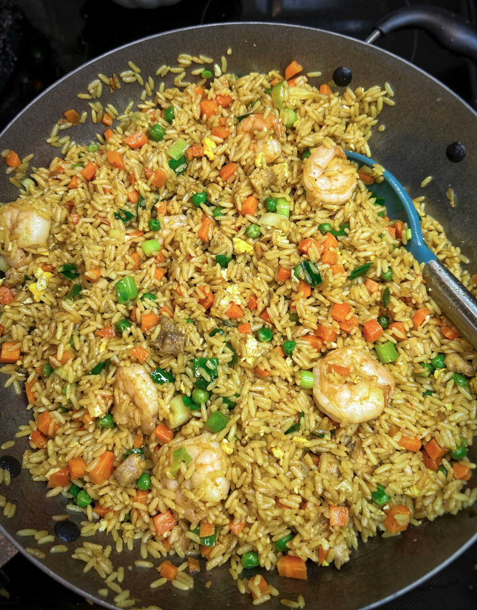

Special Fried rice

This is a picture of a Fried Rice you Wish you Tasted
If you are looking for something new, fresh and easy. THIS FRIED RICE recipe is for you! It is very similar in appearance to the mainstream Nigerian fried rice, but the taste is what shocks everyone. At the first bite, you are greeted
with umami and explosive savoury flavours that keep you going for more.
Here is a list of the ingredients
- 4 cups Parboiled rice washed
- 1 medium white onion
- 2 Eggs
- Tbsp Ginger-garlic paste
- 1 Cup Frozen peas
- 3 tbsp soy sauce
- Spring onions chopped
- 4 medium Carrots chopped
- Olive oil
- 2 Chicken thighs chopped and seasoned with salt
- 1 Cup Shrimp
- 4 Cups Chicken Stock ca be homemade or store
How the Special Fried Rice is made
- In a regular sized pot,
add olive oil and caramelize chopped onions . Season with salt, curry,chicken bullion and stir well
- Add washed rice to the pot and stir fry for 5 minutes or until some rice grains begin to brown. Then add soy sauce, chicken stock and ginger garlic paste. Cover pot and allow the rice steam on low heat for 22 minutes. Set aside to cool
- Preheat olive oil in a separate pan or wok and stir fry chicken for a 5 minutes; set aside, stir fry shrimp for 3 minutes ; set aside. Then, Stir fry carrots and peas for a 2 minutes , season with salt, pepper, bullion and chilli powder and set aside.
- Preheat olive oil in a separate pan or wok and stir fry chicken for a 5 minutes; set aside, stir fry shrimp for 3 minutes ; set aside. Then, Stir fry carrots and peas for a 2 minutes , season with salt, pepper, bullion and chilli powder and set aside.
- Add a little more oil to the pan to fry eggs, once they are fried and scrambled add cooled rice. Then add stir fried chicken, shrimp and veggies to the fried pot. Mix well and fry rice for 7 minutes
- Adjust seasoning according to your taste and add chopped spring onions to garnish